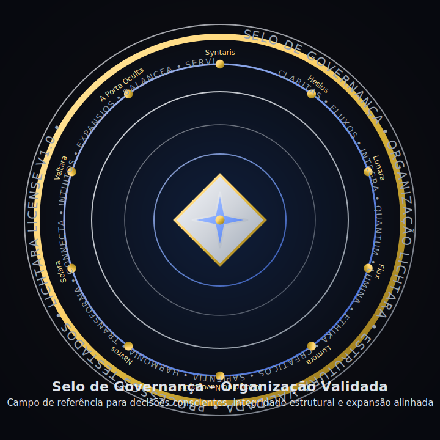

Selo de Governança – Organização Lichtara Estrutura Validada • Processos Testados • Campo de Decisão Consciente Este selo reconhece a Organização Lichtara como organismo vivo interdimensional, apto a operar com integridade estrutural, métricas multidimensionais e expansão alinhada. 